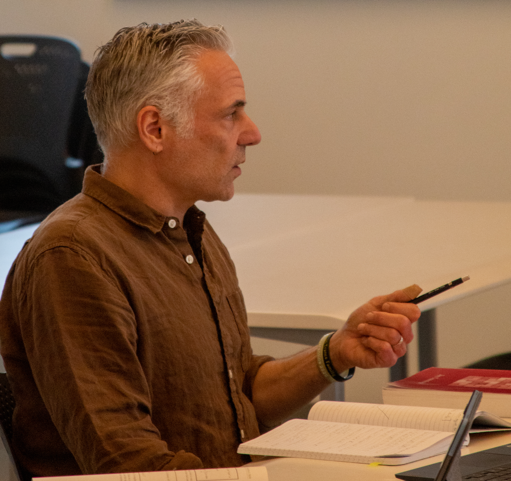

short-ish bio
David Feldman is Professor of Physics and Mathematics and Dean of Academic Affairs at College of the Atlantic. He is the author of two books: Chaos and Fractals: An Elementary Introduction (Oxford University Press, 2012), a textbook for non-math/science majors; and Chaos and Dynamical Systems (Princeton University Press, 2019), a contribution to the Primers in Complex Systems series. Dave has developed two MOOCs, one on Chaos and Dynamical Systems and one on Fractals and Scaling. These free, online classes are part of the Santa Fe Institute's Complexity Explorer project and have been taken by thousands of students. He is currently working on a textbook on renewable energy.
Dave has taught over twenty different classes in physics, math, and computer science at College of the Atlantic. He served as COA's Associate Dean for Academic Affairs from 2003-07. Dave served as Co-director of the Santa Fe Institute's Complex Systems Summer School (CSSS) in Beijing, China from 2006-08 and since 2017 has directed the Santa Fe CSSS. From December 2018 to August 2019 he was the Interim Vice-President for Education at the Santa Fe Institute. Dave was a U.S. Fulbright lecturer in Rwanda in 2011-12.
long-ish bio

David Feldman received a B.A. in Physics from Carleton College in 1991 and a Ph.D. in Physics from the University of California at Davis in 1998. From 1991-1993, he was a teacher of 9th and 10th grade physics and mathematics at The McCallie School in Chattanooga, TN. As a graduate student at UC Davis, Dave received several awards in recognition of both teaching and scholarship: the Dissertation Year Fellowship; the Chancellor's Teaching Fellowship; and he was nominated for the Outstanding Graduate Student Teaching Award.
Dave joined the faculty at College of the Atlantic in 1998. He served as Associate Dean for Academic Affairs from 2003-2007. He is currently Dean of Academic Affairs. At COA Dave has taught over twenty different courses in physics, mathematics, and computer science. Together with several other colleagues, in 2016 he launched the Thoreau Environmental Leaders Initiative, a project that supports participatory learning in food systems, renewable energy, and climate change politics, and helps give students skills in community organizing and activism. The project has been supported by several grants from the Henry David Thoreau Foundation totaling $155,000.
Dave is the author of two books: Chaos and Fractals: An Elementary Introduction (Oxford University Press, 2012), a textbook for non-math/science majors; and Chaos and Dynamical Systems (Princeton University Press, 2019), a contribution to the Primers in Complex Systems series. Dave has developed two MOOCs, one on Chaos and Dynamical Systems and one on Fractals and Scaling. These free, online classes are part of the Santa Fe Institute's Complexity Explorer project and have been taken by thousands of students.
With Anna E. Demeo, Dave developed an an introductory course on the physics and mathematics of sustainable energy. Anna and Dave received a $95,000 grant from the Maine Space Grant Consortium Research and Higher Education Program to support the development of the class. They also received an $18,000 grant from the Environmental Education Program of the Environmental Protection Agency to develop and teach a workshop on sustainable energy for area elementary school teachers. Dave is currently working on a textbook on renewable energy.
From 2004-2008, Dave gave a week-long series of lectures at the China Complex Systems Summer School (CSSS), co-sponsored by the Santa Fe Institute and the Institute of Theoretical Physics at the Chinese Academy of Sciences in Beijing. He was PI on a $116,000 grant from the U.S. National Science Foundation that partially supported the CSSS. Since 2017 Dave has directed the CSSS in Santa Fe, New Mexico. In 2018-19 he served as the Santa Fe Institute's interim vice-president for education.
In 2011-12, Dave was a U.S. Fulbright Lecturer in Rwanda. He held an appointment as a visiting professor of Applied Physics at the Kigali Institute of Science and Technology (KIST), which is now known as the University of Rwanda, College of Sciences and Technology. At KIST he taught four classes for junior and senior physics majors and an introductory physics course to 180 chemistry, biology, and food science majors.
Dave's research interests lie in the fields of statistical mechanics and nonlinear dynamics. In particular, his research has examined how one might measure "complexity" or pattern in a mathematical system, and how such complexity is related to disorder. Dave has authored research papers in journals including Physical Review E, Chaos, and Advances in Complex Systems. Two of his papers have been cited over 500 times.
Dave was a founding member of the Mount Desert Island (MDI) Racial Equity Working Group and the MDI Racial Justice Collective. He was a member of the steering committee of Indivisible MDI. Dave is a member of the Title IX team at College of the Atlantic and has completed an ATIXA level two Civil Rights Investigator training.
His other interests include playing ultimate frisbee (although he is now retired), watching hockey, cooking, travel, and gardening. He is married to Doreen Stabinsky; they have three excellent cats.
[Dave's Home Page]